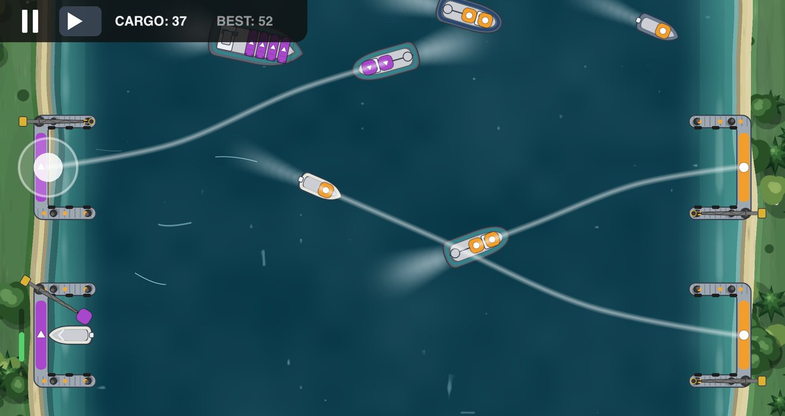
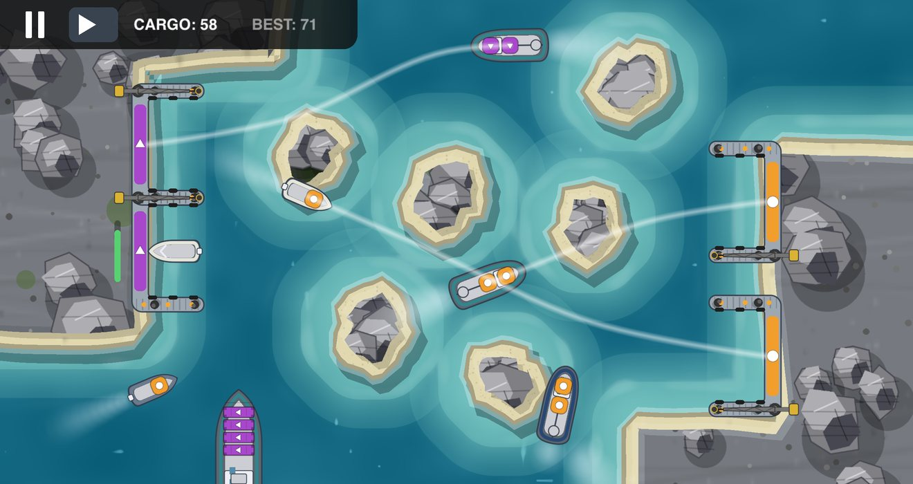
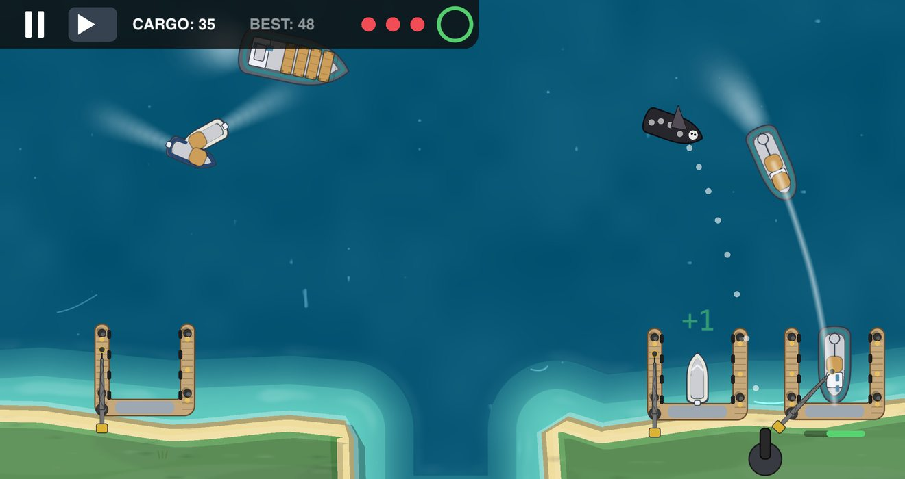
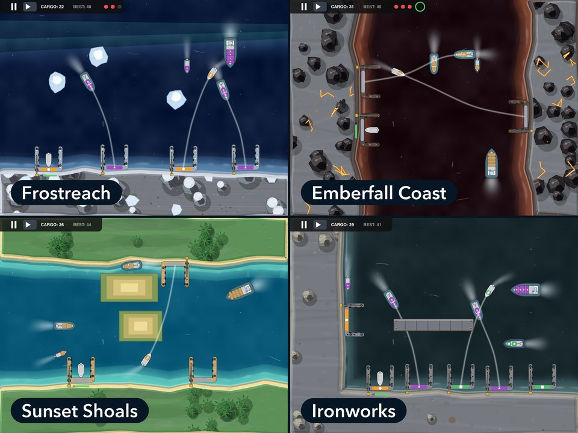
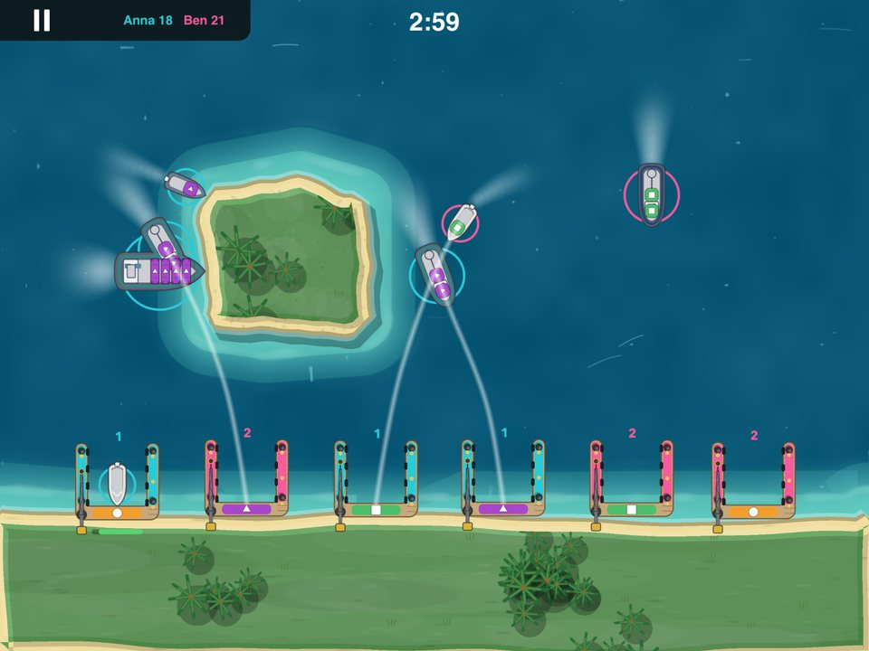

Для iPhone и iPad · Попробуй бесплатно
Проложи курс.
Швартуй корабль.
Проведи линию от корабля к причалу — и он пойдёт точно по ней. Потом следующий. И ещё один. Harbor Rush начинается спокойно и разгоняется до восхитительной, приятной паники: один палец, сорок девять портов и ни одной рекламы.



Один палец. Все корабли.
Коснись корабля, проведи его маршрут к причалу того же цвета и отпусти. Вот и всё управление — остальное лишь решить, какой корабль и когда.
Проведи линию
Корабль идёт точно по твоей линии, в своём темпе, пока ты занят следующим. Передумал? Проведи новую линию.
Разгрузи и отправь обратно
Каждый корабль разгружается у причала, а потом ему нужна вторая линия — обратно в море. Уходящие корабли опасны не меньше прибывающих.
Не дай им столкнуться
Маршруты могут пересекаться, корабли — нет. Разведи их по времени или измени маршрут одного из них. Одно столкновение — и смена окончена.
Тихая вода. А потом — аврал.
Смена начинается с одной лодки и пустого порта. Каждая доставка приближает следующий корабль — потом приходят сразу два, потом сухогруз, который на шесть секунд занимает причал, пока вокруг кружат три катера.
В этом нарастании и есть вся игра: момент, когда ты проводишь линии, краем глаза следя за столкновением, которое видно заранее. Это приятная паника, а когда она заканчивается, до «Играть снова» — одно касание.
Сорок девять портов. И все разные.

Льдины, рифы, шлюзы, мины и вулканические берега
Семь регионов, по семь портов в каждом, и каждый сделан вручную: неизменная береговая линия, свои опасности и один верный способ удержать движение — его тебе и предстоит найти. Бронзовая, серебряная и золотая медали в каждом порту и отдельный рейтинг Game Center для каждого из них.
Родные Воды
Здесь всё начинается: рифы, водоворот, кракен и первые пираты.
Ледяной Простор
По фарватерам дрейфуют льдины — и топят всё, во что врезаются.
Закатные Отмели
Отливы, обнажающие мели поперёк твоих маршрутов, пираты и VIP-корабли.
Железные Заводы
Разводные мосты, шлюзы и доставки с двумя остановками вдоль промышленного канала.
Проливы Чёрного Рифа
Морские мины, порывы ветра, кракен и пиратские конвои.
Зелёная Дельта
Речные течения, приливы и скоропортящийся груз, который не станет ждать.
Тлеющий Берег
Лавовое течение, мины, мальстрём и VIP-финал.
Море даёт отпор
Пираты и береговые пушки
Налётчики гонятся за ближайшим кораблём. Наведи пушку с берега и потопи их, пока они не утащили корабль.
Кракен
Щупальца поднимаются из воды и перекрывают причал. Коснись их, чтобы загнать обратно под воду.
Лёд, приливы и течения
Льдины дрейфуют поперёк маршрутов, отлив обнажает мели на фарватерах, а течения сносят корабль с линии.
Шлюзы и разводные мосты
Ворота открываются по своему расписанию — или по твоему, одним касанием. Придёшь не вовремя — будешь ждать.
Зови друга

Один экран на двоих — или рядом и онлайн
Один iPhone или iPad на двоих: каждому игроку принадлежат корабли, заходящие с его стороны порта, причалы по ходу матча переходят из рук в руки, а через три минуты побеждает тот, кто доставил больше груза.
Или играйте на двух устройствах — рядом, без подключения к интернету, или онлайн против друга из Game Center или случайного соперника.
Попробуй бесплатно. Оставь себе навсегда.
Два порта — бесплатно навсегда
Первые два порта Родных Вод ничего не стоят: в них нет рекламы и ограничений по времени.
Один регион — одна покупка
Открой любой регион одной покупкой. Она не продлевается и восстанавливается на других твоих устройствах.
Мировой пропуск
Все регионы одной покупкой — включая те, что появятся позже.
Без рекламы. Без энергии. Без таймеров. Без лутбоксов. Без подписок. Никакая покупка не влияет на счёт, поэтому каждый рейтинг честный.
Для каждого игрока
Удобно для дальтоников
У каждого цвета груза свой значок — круг, треугольник или квадрат — и на корабле, и на его причале.
Играй офлайн
Одиночной игре подключение не нужно вовсе. Бери её с собой в самолёт.
Медали и испытания
Получай бронзу, серебро и золото в каждом порту, а потом попробуй смену-испытание: только сухогрузы, один причал или без пушки.
iPhone и iPad
Порт заполняет весь экран твоего устройства — на одиннадцати языках.
Твоя игра, а не твои данные
Без рекламы. Без слежки. Без аккаунтов. Здесь нет рекламы, нет отслеживания между приложениями и не нужно нигде регистрироваться. Game Center — по желанию, и это сервис Apple, а не наш. Любые счётчики использования анонимны и не могут быть связаны с тобой — политика конфиденциальности точно описывает, что отправляется.
Перед загрузкой
Это правда бесплатно?
Два порта бесплатны навсегда, без рекламы и ограничений по времени. Первый открыт сразу, второй — после 25 единиц груза в первом. Остальная игра — разовая покупка для каждого региона или Мировой пропуск для всего сразу.
Есть ли подписка?
Нет. Каждая покупка — разовое открытие, которое остаётся твоим и восстанавливается на других твоих устройствах.
Нужен ли интернет?
Для одиночной игры — нет. Он нужен, чтобы купить регион, а также для рейтингов Game Center и онлайн-матчей. Матчи рядом работают без интернета.
Можно ли играть вдвоём на одном устройстве?
Да. Вы делите один порт, каждому принадлежат корабли со своей стороны, матч длится три минуты. Побеждает тот, кто доставит больше груза.
Harbor Rush
Harbor Rush
Попробуй бесплатно, открой раз и навсегда. iPhone и iPad, одиннадцать языков, без аккаунта.